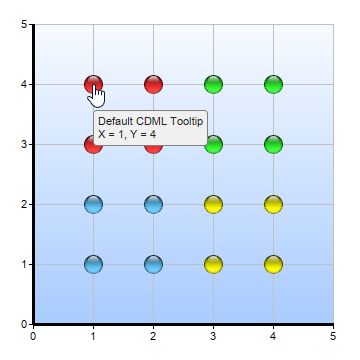
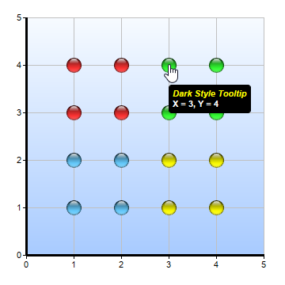
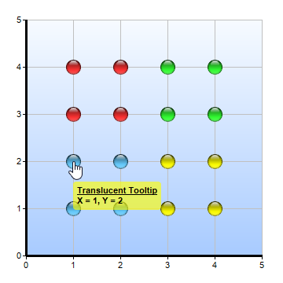
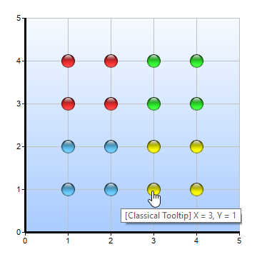

This example demonstrates various CDML tooltip styles.
By default, ChartDirector displays tooltips with the tooltip implementation provided by the GUI framework. For MFC applications, it will use the tooltip implementation provided by MFC. For Qt applications, it will use the tooltip implementation provided by Qt.
This example demonstrate several CDML tooltip styles. It also includes the default tooltip for comparison.
The following is the MFC version of the code in mfcdemo/mfccharts.cpp. The Qt version of the code is in qtdemo/democharts.cpp.
void cdmltooltip(CChartViewer *viewer, int /* chartIndex */)
{
//
// Data for 4 scatter layers to demonstrate various tooltip styles
//
double dataX0[] = {1, 1, 2, 2};
const int dataX0_size = (int)(sizeof(dataX0)/sizeof(*dataX0));
double dataY0[] = {3, 4, 3, 4};
const int dataY0_size = (int)(sizeof(dataY0)/sizeof(*dataY0));
double dataX1[] = {3, 3, 4, 4};
const int dataX1_size = (int)(sizeof(dataX1)/sizeof(*dataX1));
double dataY1[] = {3, 4, 3, 4};
const int dataY1_size = (int)(sizeof(dataY1)/sizeof(*dataY1));
double dataX2[] = {1, 1, 2, 2};
const int dataX2_size = (int)(sizeof(dataX2)/sizeof(*dataX2));
double dataY2[] = {1, 2, 1, 2};
const int dataY2_size = (int)(sizeof(dataY2)/sizeof(*dataY2));
double dataX3[] = {3, 3, 4, 4};
const int dataX3_size = (int)(sizeof(dataX3)/sizeof(*dataX3));
double dataY3[] = {1, 2, 1, 2};
const int dataY3_size = (int)(sizeof(dataY3)/sizeof(*dataY3));
// Create a XYChart object of size 550 x 390 pixels
XYChart* c = new XYChart(550, 390);
// Set the plotarea at (30, 40) and size 300 x 300 pixels. Use a gradient color background,
// light grey (c0c0c0) border, and light grey horizontal and vertical grid lines.
c->setPlotArea(30, 40, 300, 300, c->linearGradientColor(0, 30, 0, 330, 0xf9fcff, 0xaaccff), -1,
0xc0c0c0, 0xc0c0c0, 0xc0c0c0);
// Add a legend box at the right side of the plot area. Use 10pt Arial Bold font and set
// background and border colors to Transparent.
c->addLegend(c->getPlotArea()->getRightX() + 20, c->getPlotArea()->getTopY(), true,
"Arial Bold Italic", 10)->setBackground(Chart::Transparent);
// Add a title to the chart using 18pt Times Bold Itatic font
c->addTitle("CDML Tooltip Demonstration", "Times New Roman Bold Italic", 18);
// Set the axes line width to 3 pixels, and ensure the auto axis labels are integers.
c->xAxis()->setWidth(3);
c->yAxis()->setWidth(3);
c->yAxis()->setMinTickInc(1);
c->yAxis()->setMinTickInc(1);
// Add a scatter chart layer with 19 pixel red (ff3333) sphere symbols. Use default CDML tooltip
// style.
ScatterLayer* layer0 = c->addScatterLayer(DoubleArray(dataX0, dataX0_size), DoubleArray(dataY0,
dataY0_size), "Default CDML Tooltip", Chart::GlassSphere2Shape, 19, 0xff3333);
layer0->setHTMLImageMap("", "", "title='<*cdml*>{dataSetName}<*br*>X = {x}, Y = {value}'");
// Add a scatter chart layer with 19 pixel green (33ff33) sphere symbols. Cconfigure the CDML
// tooltip to use a background background with text of different colors and fonts.
ScatterLayer* layer1 = c->addScatterLayer(DoubleArray(dataX1, dataX1_size), DoubleArray(dataY1,
dataY1_size), "Dark Style Tooltip", Chart::GlassSphere2Shape, 19, 0x33ff33);
layer1->setHTMLImageMap("", "",
"title='<*block,bgcolor=000000,margin=5,roundedCorners=3*><*font=Arial Bold "
"Italic,color=FFFF00*>{dataSetName}<*/font*><*br*><*font=Arial Bold,size=8,color=FFFFFF*>X "
"= {x}, Y = {value}'");
// Add a scatter chart layer with 19 pixels sky blue (66ccff) symbols. Configure the CDML
// tooltip to ue a translucent background.
ScatterLayer* layer2 = c->addScatterLayer(DoubleArray(dataX2, dataX2_size), DoubleArray(dataY2,
dataY2_size), "Translucent Tooltip", Chart::GlassSphere2Shape, 19, 0x66ccff);
layer2->setHTMLImageMap("", "",
"title='<*block,bgcolor=5fffff00,margin=5,roundedCorners=3*><*font=Arial Bold*>"
"<*font,underline=1*>{dataSetName}<*/font*><*br*>X = {x}, Y = {value}'");
// Add a scatter chart layer with 19 pixels sky blue (ffff00) symbols. Use standard tooltips
// provided by the GUI framework.
ScatterLayer* layer3 = c->addScatterLayer(DoubleArray(dataX3, dataX3_size), DoubleArray(dataY3,
dataY3_size), "Classical Tooltip", Chart::GlassSphere2Shape, 19, 0xffff00);
layer3->setHTMLImageMap("", "", "title='[{dataSetName}] X = {x}, Y = {value}'");
// Output the chart
viewer->setChart(c);
// Include tool tip for the chart
viewer->setImageMap(c->getHTMLImageMap("clickable"));
}
© 2023 Advanced Software Engineering Limited. All rights reserved.